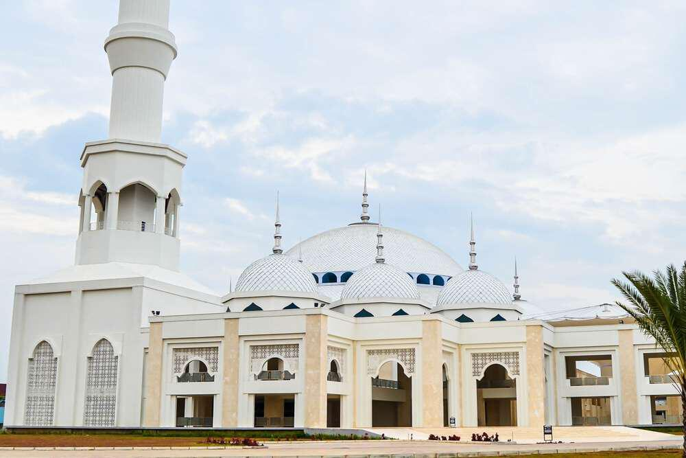
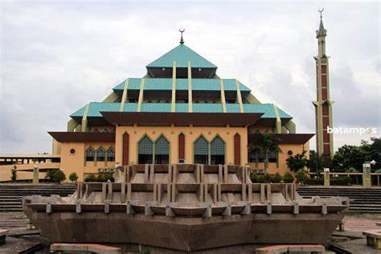
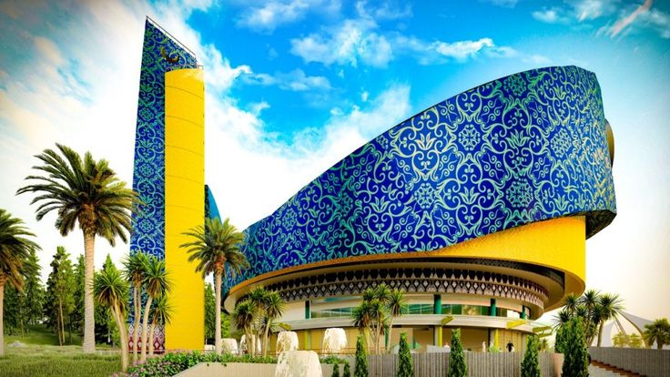
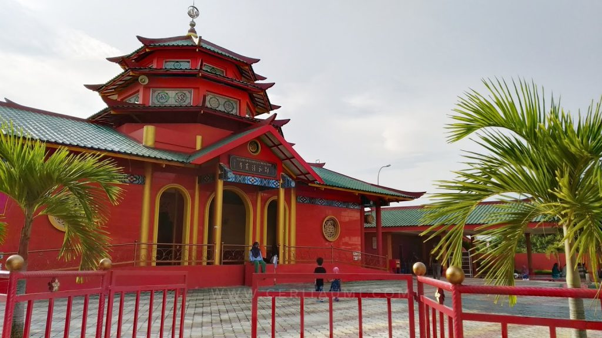

ISLAM

Masjid Sultan Mahmud Riayat Syah
sebuah masjid megah yang diresmikan pada tahun 2019, masjid ini menjadi salah satu ikon baru Batam dan menjadi tujuan wisata religi yang populer dan terletak di kawasan tanjung uncang.

Masjid Agung Kota Batam
salah satu masjid yang memiliki desain arsitektur yang unik dengan kubah berbentuk limas segi empat atau menyerupai piramida. dan masjid ini terletak di pusat kota batam yaitu di Batam Kota.

Masjid Tanwirun Naja (Masjid Tanjak)
yang lebih dikenal dengan Masjid Tanjak adalah sebuah Masjid yang terinspirasi dari bentuk tanjak, yaitu hiasan kepala khas Melayu yang melambangkan kewibawaan.dan terletak tepat didepan Bandara Hang Nadim Batam.

Masjid Cheng Hoo Bengkong Laut
sebuah masjid unik di Batam yang memadukan unsur budaya Tionghoa dan Islam. Masjid ini dibangun sebagai bentuk penghormatan kepada Laksamana Cheng Ho,dan masjid ini terletak dikawasan bengkong laut batam.